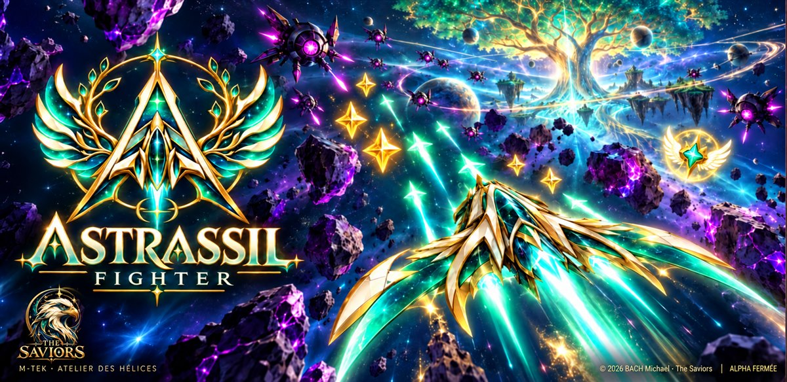
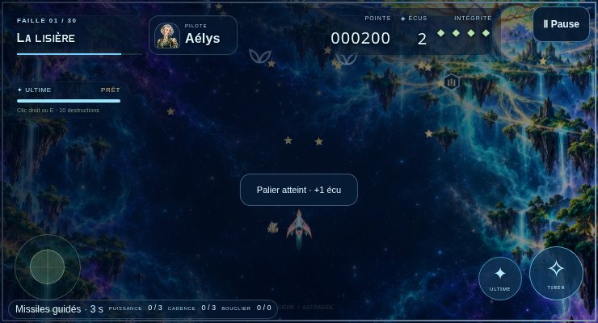

Déjà un compte
Je reprends l’aventure
Retrouvez votre compte et votre jeu, sans recréer de profil.
Jouer maintenant Me connecter / Mon compteL’arcade céleste · The Saviors
Votre prochain vol commence ici. Choisissez simplement votre façon de jouer.
iPhone / iPad · TestFlightNavigateur · sans installationAndroid · test Google Play13 ans et plus

Déjà un compte
Retrouvez votre compte et votre jeu, sans recréer de profil.
Jouer maintenant Me connecter / Mon compteNouveau joueur
La création de compte sans invitation n’est pas encore activée sur le serveur.
Voir comment accéder au jeu L’APK et le test Play ne créent pas de compte de jeu.Choisissez votre accès
Internet et compte Astrassil activé nécessaires pour jouer.
iPhone / iPad · TestFlight
Version native 0.5.0 avec connexion Apple. Le lien TestFlight sera activé ici après signature et validation du premier build Apple.
Sur iPhone et iPad, « Continuer avec Apple » est le moyen de connexion natif principal. Google n’est pas nécessaire pour jouer sur iOS.
Si vous souhaitez aussi tester la version Android, l’inscription Google Play reste facultative et s’ouvre séparément dans Safari depuis votre compte.
Android · téléchargement direct
Version signée 0.6.8 · code 22.
Environ 12,2 Mo.
Ouvrez le fichier téléchargé. Android peut demander d’autoriser l’installation depuis votre navigateur ; respectez les restrictions de votre appareil.
Déjà installé ? Installez la mise à jour par-dessus l’application. Ne la désinstallez pas et n’effacez pas ses données.
Les correctifs Web compatibles sont chargés depuis le serveur. Une nouvelle APK doit être installée manuellement. Ce paquet n’embarque pas le jeu complet hors ligne.
SHA-256 de l’APK téléchargée et contrôlée :
911913adecd3d36f2830ebfa419c46832f29979517a25c67c25b12f1b7619a1a12 205 400 octets.
Détails de la version sur GitHubBêta · Google Play
Sur iPhone, iPad, ordinateur ou Android : vérifiez votre compte Google et inscrivez-vous à la liste du test fermé.
M’inscrire comme bêta-testeur Déjà autorisé ? Ouvrir Google PlayAucun compte de jeu n’est nécessaire pour candidater. Google vérifie votre adresse, vous confirmez votre participation, puis l’équipe l’ajoute à la liste Google Play. Utilisez ensuite ce même compte Google pour rejoindre le test.
Navigateur · iPhone, iPad et ordinateur
Vous pouvez aussi ouvrir Astrassil dans votre navigateur. Sur iPhone et iPad, utilisez Safari.
Ouvrir le jeu en ligneLe lanceur Windows 10/11 x64 ouvre le même jeu en ligne dans votre navigateur.
Installer le lanceur WindowsTélécharger la version portableSafari reste disponible comme solution de secours si vous ne souhaitez pas installer TestFlight.
Première visite
L’inscription libre est en préparation. Le serveur exige encore une activation personnelle. Cette page ne peut pas ouvrir un compte à sa place. Si vous avez déjà un accès, reconnectez-vous au même compte ; sinon, contactez l’équipe avant de commencer.
Un soutien financier n’accorde ni accès, ni objet, ni bonus en jeu.
Le jeu
Pilotez, améliorez votre vaisseau et explorez les failles d’Astrassil.
60 failles, puis une progression procédurale. Préparez votre équipement entre les vols.
Des expéditions coopératives sur 30 failles, avec une progression distincte. Une expédition à la fois ; pas encore d’XP ni d’écus en coopération.
Retrouvez le hangar, choisissez votre apparence et préparez votre prochain départ.

Besoin d’un repère ?
Les réponses utiles, sans chercher dans une longue notice.
Guide illustré en français · édition du 20 octobre 2026. Les fonctions ajoutées depuis peuvent différer.
Dans l’application iOS, utilisez « Continuer avec Apple ». Astrassil utilise l’identifiant Apple stable du compte ; si vous choisissez « Masquer mon e-mail », l’adresse relais Apple peut être utilisée sans révéler votre adresse personnelle.
Google n’est pas requis pour jouer sur iOS. Il n’est demandé que si vous choisissez volontairement de rejoindre le test fermé Google Play pour Android.
Utilisez le compte Google déjà associé à votre compte Astrassil. Si vous ne l’avez pas encore associé, connectez-vous d’abord avec vos identifiants Astrassil dans le navigateur, puis choisissez « Associer Google à mon compte actuel ».
Une adresse e-mail identique ne fusionne pas automatiquement deux comptes.
Ouvrir Mon compteNe désinstallez pas l’application et ne videz pas ses données pour effectuer une mise à jour. Dans « Compte et sauvegarde », vérifiez le compte, l’aperçu et la réussite de la copie cloud.
Sur un appareil neuf, vérifiez la sauvegarde disponible puis confirmez sa restauration. La connexion seule ne restaure pas automatiquement la progression locale. Un combat en cours n’est pas un point de reprise.
Le serveur d’alpha dépend encore d’un PC allumé et connecté. Réessayez plus tard et signalez l’heure ainsi que le message rencontré. Télécharger une nouvelle fois l’APK ne résout pas une panne du serveur.
La création libre de comptes n’est pas encore activée sur le serveur. La nouvelle page d’accueil ne supprime pas à elle seule cette restriction. Un compte déjà activé doit pouvoir se reconnecter sans nouvelle invitation.
Voir les conditions du premier accèsLa procédure et les données concernées sont détaillées sur la page dédiée, accessible même après désinstallation de l’application.
Supprimer mon compte et mes donnéesFaire avancer l’alpha
Indiquez l’appareil, la version, les étapes et le résultat attendu. Masquez les informations personnelles de vos captures.
Un soutien facultatif, au choix : 17 € une fois ou un abonnement de 17 € par mois, renouvelé chaque mois via Qonto/Mollie. Aucun accès, objet ou bonus en jeu n’est accordé en contrepartie. Les conditions de paiement et l’annulation de l’abonnement sont gérées par le prestataire.